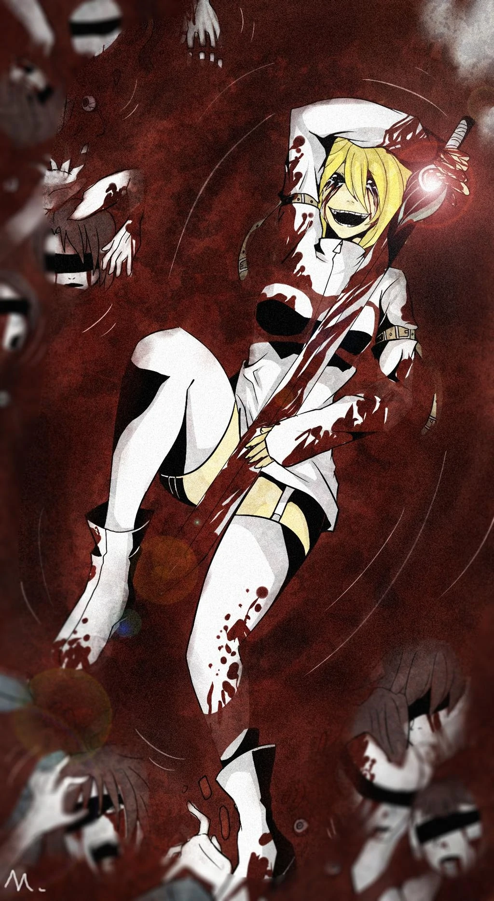

Ever since Dina was born, her father hated her and despised her. This was because she looked nothing like her parents, and she had black eyes. When she was born, her father decided to isolate her from the outside world so nobody knew Dina was his child or was even alive.
When she was 15 years old, Dina wanted to go outside like the others were able to, she always dreamed of it but she was trapped in the house so she knew her dream could never be fulfilled in that position. Dina would visit a room where her father kept a long sword that was rumored to have belonged to an angel who dropped the sword during a war and the sword landed on earth only for it to be passed down for generations and the sword ended up with Dina's father. Dina adored the sword so much, wanting it to be hers and always thinking it belonged to her and that the sword chose her.
So Dina proposed to her mother an offer to run away since both of them were miserable in the house so her mother and Dina decided on Christmas Eve that they will secretly run away. Dina snuck out before the escape to get a pendant that she was going to give to her mother as a gift for when they escaped. Mr. Clark, however, found out when people reported seeing Dina going into the store and entering the house so people then started to become curious which angered Mr. Clark since he wanted the existence of Dina to be a secret. Mrs. Clark ran into the room screaming for Dina to run when Mr. Clark ran in and threatened to kill Dina because of her sneaking out and his yard beginning to become crowded with news reporters.
Dina goes back to the special room where the sword was and she took the sword out its case planning to escape once she found her mother. Dina went up to her father's office and found her mother. However, her mother was dead from being stabbed and her mother was covered in bruises and wounds. Dina burst into tears and hugged her mother's corpse when she saw the reflection on her sword of a person heading for her so Dina turns around and slashes the person who turned out to be her father. Dina chops her own father's leg off making him immediately scream in agony and become unable to pull himself up. Dina laughs and giggles crazily whispering and rambling on about being an angel and a judge for all humans. Dina repeatedly stabs her father in the stomach and soon before chopping his head off she says, "I announce you guilty!"
Dina changes into a new outfit and puts her mother's corpse in a suitcase promising to find her a beautiful place to bury her. Dina leaves the mansion on fire and smiling before heading into the woods and then soon further on murdering the lives of humans who she finds, "guilty".